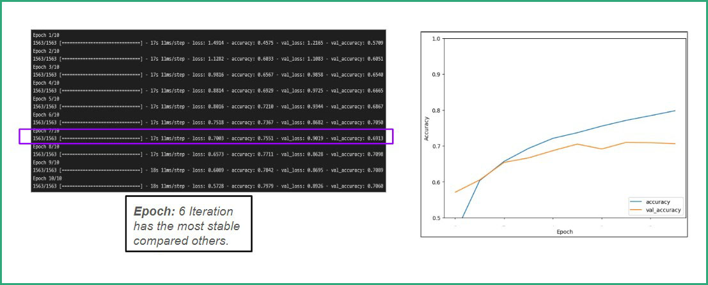
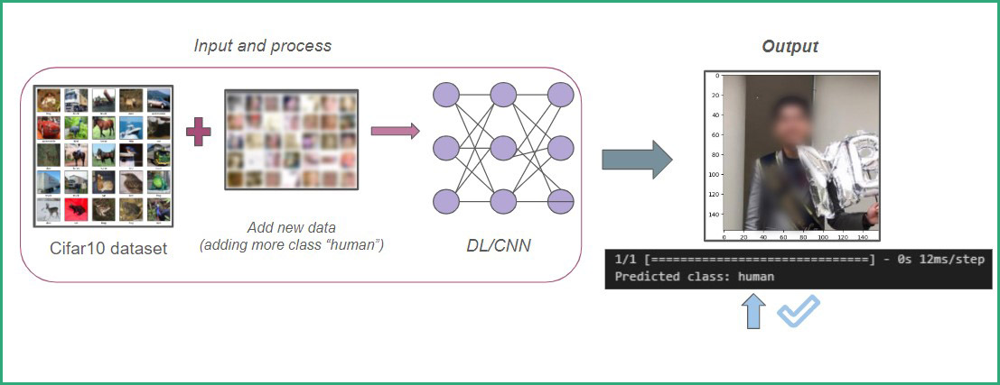

Deep Learning with Tensorflow
Image Recognition using Convolutional Neural Network.
Context: In this era, the term Artificial Intelligence is booming, and its core process is deep learning. But what differentiates deep learning from machine learning? Machine learning typically relies on structured data and requires manual feature extraction. In contrast, deep learning handles complex, unstructured data and automatically learns features. The picture below may explain the difference.
In machine learning, input features are manually extracted, then in classification, as shown in the image, it becomes binary, with the output being either cat or not cat based on feature extraction or selection. However, in deep learning, input and its unstructured data are used for automatic learning, enabling more complex tasks to determine output, such as identifying birds, dogs, or cats. Furthermore, deep learning excels at challenging tasks like image recognition and natural language processing, as it is commonly based on neural networks.
Task: Therefore, in this case, we aim to classify images into specific categories using deep learning and neural networks. After building the model, we will evaluate its performance by providing new, unseen images and observing its categorization accuracy.
Action and Method:
For this project, we will employ TensorFlow, a leading deep learning framework, to classify images using Convolutional Neural Networks (CNNs). TensorFlow's open-source nature and flexibility, centered around tensor operations, make it ideal for developing complex models like gemini AI of google. CNNs excel at image processing by extracting features through multiple layers, including convolutional and pooling layers, before final classification.
To train our model, we will utilize the CIFAR-10 dataset, which contains over 50,000 images categorized into classes. TensorFlow will preprocess these images, ensuring consistent dimensions, before feeding them into the neural network. The model will learn to optimize its parameters through backpropagation, using an optimizer to adjust weights and learning rates based on the calculated loss. Activation functions will introduce non-linearity, enabling the network to capture intricate patterns within the image data. Multiple training epochs will refine the model's accuracy iteratively.
Based on epoch 6, we identified the model with the least overfitting or underfitting as our stable model. This model will be used to test new data. Since the model was trained on the CIFAR-10 dataset, which consists of real-world images, we will evaluate its performance on cartoon characters like Lightning McQueen from Cars and the famous meme character doggo. This will assess the model's ability to generalize to unseen data that will be explained in result segment.
Result:
The model accurately classified McQueen as an automobile and also doggo as a dog. However, when testing with a new image, my profile picture below (intentionally blurred for this article), we will see incorrect detection..
The model incorrectly classified it as a truck. This misclassification likely occurred due to insufficient training data representing humans. To address this issue, two potential solutions were considered: fine-tuning the existing model or expanding the dataset with more human faces. Opting for the latter, the dataset was augmented with additional human face images. While the overall accuracy remained similar, the model successfully reclassified my profile picture as a human, indicating an improvement in performance, as seen below.
In the end, deep learning offer various applicable things in real world but the lesson learned here like Machine Learning, Deep learning is only as good as the data collection and the processed data itself. This experiment highlights the critical role of data quality and quantity in the success of machine learning and deep learning models.